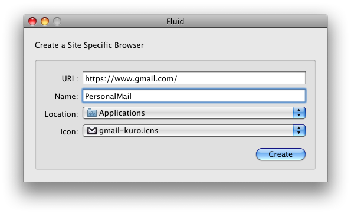

Multiple Gmail Accounts on OSX Done Right
Vote on HN TweetI learned this tip from Seggy and I've explained it to several people already. If you've fallen in love with Gmail's web interface, then you're going to love this solution.
One annoyance I have on my work laptop is switching between work email and personal email. For the longest time, I suffered with using Apple Mail for work stuff and Gmail's web interface for my personal mail. I hate Apple Mail, and I hate IMAP and all it's syncing headaches. Gmail's web interface is the exact opposite. It's accessible everywhere, stays in sync, and has the best search and organizing features. My dilemna: How can I get my 2 email accounts to be into desktop applications, but keep that same amazing web interface?
Enter Fluid.app. Put simply, it's an application that creates OSX app's from web pages. The generated app have menulets, so you can replace Google Notifiers. Fluid also lets you skin web pages with Javascript and CSS if you're inclined.
After you install Fluid, make sure you download these gorgeous Gmail icons.
When you fire up Fluid, fill in the following information:

Choose one of the icons you just downloaded. I use orange for personal mail, and Coupa blue for work email. When you finish, launch the apps, login to Gmail, and viola!
Here's what my dock looks like. Note how there's an indicator for the number of unread messages in my mailbox. Sweet!
Update: Since I told people about my solution, I heard about two interesting alternatives. Postbox Inc is a free program, and Mailplane App costs $24.95. Both of them were amazing apps, but fell slightly short of my expectations. They both had very polished UI's, and were both quick to download and get up and running. Postbox was immediately out of the running when I saw that it used POP/IMAP. Mailplane was a much more interesting candidate. It's great because it embeds the Gmail interface in the main window, but gives you OS X menus and drag&drop functionality. My favorite features were the screenshot taker and drag and drop attachments. It feels more like a native desktop app than my Fluid solution. Alas, I couldn't use it because of one minor pitfall. Mailplane allows you to have multiple accounts, but you have to switch between them. From the looks of it, you can only have one 'active' account at a time. This prevents me from having my accounts in separate windows, which is one of my requirements. I think both of these apps are probably better than Apple Mail, and they'd be great apps if you don't mind IMAP, or if you only have a single account.